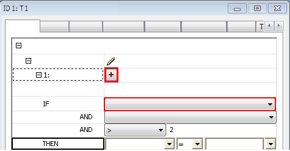

Intelligent macros
Note
Macros link machining strategies and tools with geometric information. Intelligent macros also include rules that evaluate geometric information and define when a machining strategy is executed. Intelligent macros are available for all types of features.
Initial situation: The workpiece to be machined contains many holes of various depths, diameters and sink types. A typical procedure in production may then be as follows:
-
Using Feature Mapping, the drilling geometries are recognized automatically and saved as a feature.
-
The assignment of the machining methods of these features (jobs) and the saving as a macro are initially done manually.
-
The rules are now defined in the next step. They determine which part of a macro is to be executed under specific conditions.
Define rule
To define a rule for an intelligent macro:
-
Open the macro database and select the macro for which you wish to define a rule.
-
Right-click and select Free feature parameter.
-
Specify the parameters you want to free. When you do this, the link between feature parameters and macros is severed so that you can then use the parameters for the purpose of rule definition.
-
Now open the job to which you wish to assign a rule by double-clicking the job entry in the lower area of the macro database (macro jobs).
-
On the Rule dialog tab, click the Job active entry and then click the icon .
-
Set the conditions for enabling a machining mode (of a job) based on simple IF-THEN rules.
A part of the macro name is then displayed in square brackets (example: F:D8[Through]). This indicates that parameters have been freed.
|  |
Feature parameters and formulas can be used to define macro rules.
Note
With the aid of formulas, tool parameters (such as T:Rad, T:Len, T:GageLen, T:TipAng) and user variables (such as F:H, F:R, F:LD) are available for rule definition.
Once you have confirmed your entries, the job will be marked in the macro database with [R] = Rule. Example: [R] Simple Drilling.
If all geometries in the model and strategies necessary for machining have been specified as part of the rules and if the corresponding macros have been saved in the macro database, they will be available for cross-model application.
Upon application of the macros, hyperMILL automatically provides for each geometry the correct machining sequence and thus enables the automatic machining of the models to be machined.
Copy and paste rule
Use the Copy rule to clipboard / Paste rule functions on the macro shortcut menu to copy and paste macro rules between different macro jobs.